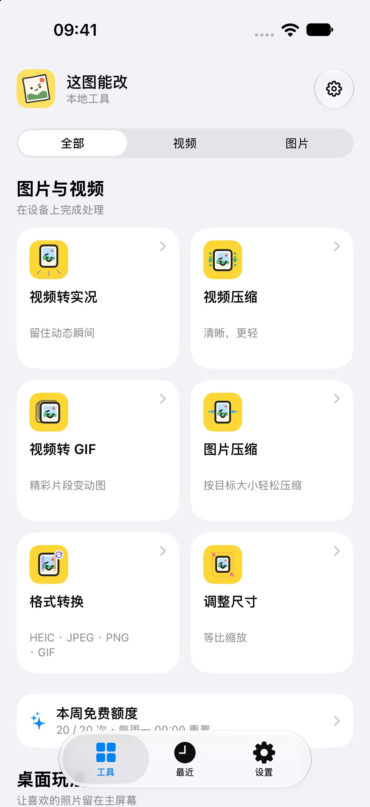
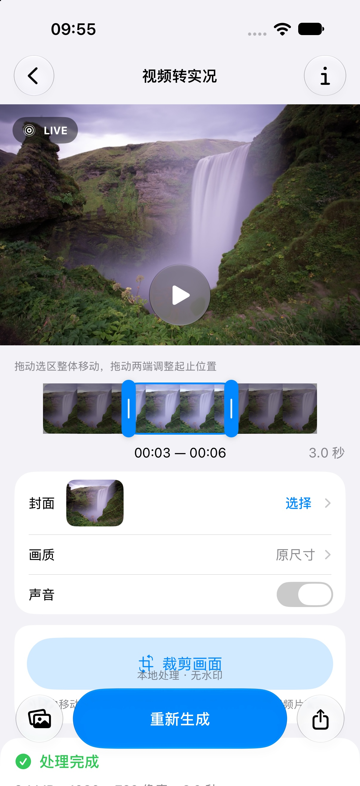

图片与视频本机工具
视频转实况、视频压缩、视频转 GIF、图片压缩、格式转换、调整尺寸，以及截图交付助手。普通影像处理在设备上完成。
视频转实况、视频压缩、视频转 GIF、图片压缩、格式转换、调整尺寸，以及截图交付助手。普通影像处理在设备上完成。
按选择顺序拼接截图，可加入说明、打码或用途水印，并按指定大小导出。打码与 OCR 候选确认在本机进行。
选择照片放上主屏幕，也可以设置照片拼图、点灯、迷宫和翻牌配对。照片与游戏进度保存在设备共享目录。
AI 生图和改图分别提供入口。你配置服务商、协议、模型、Base URL 和自己的 API Key；首次使用某组服务配置提交时，App 会显示接收方与发送内容并等待确认。更改地址、协议或模式后需再次确认。服务费用按所选服务方的规则收取，和 App 本机处理额度分开。
产品界面
工具首页与视频转实况的产品界面，展示仅供了解功能，以发布版本为准。


了解更多